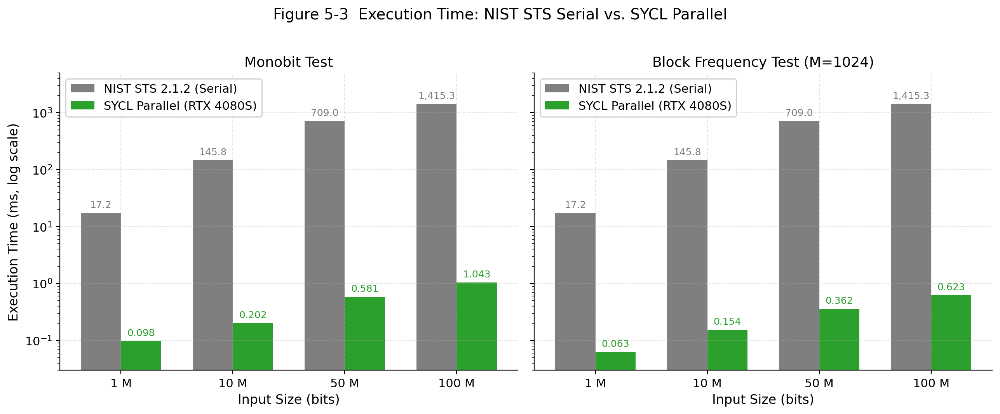
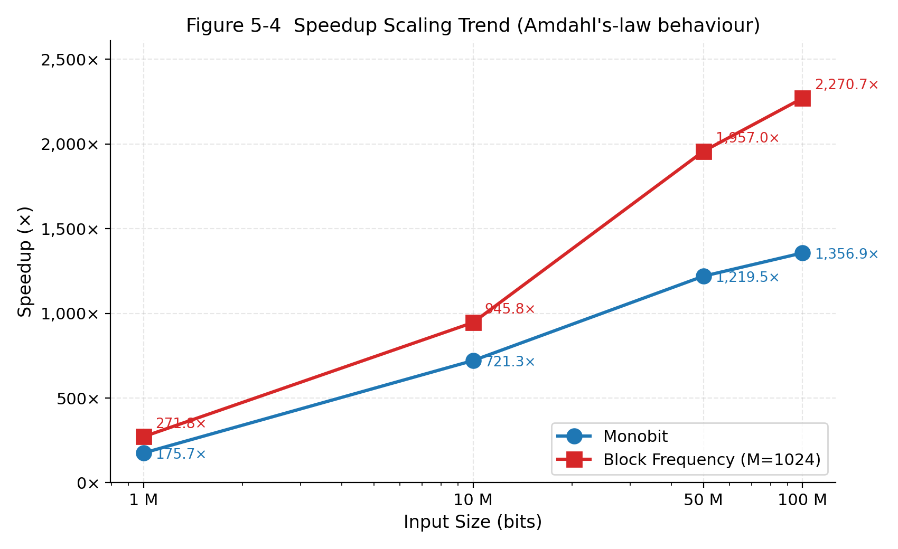
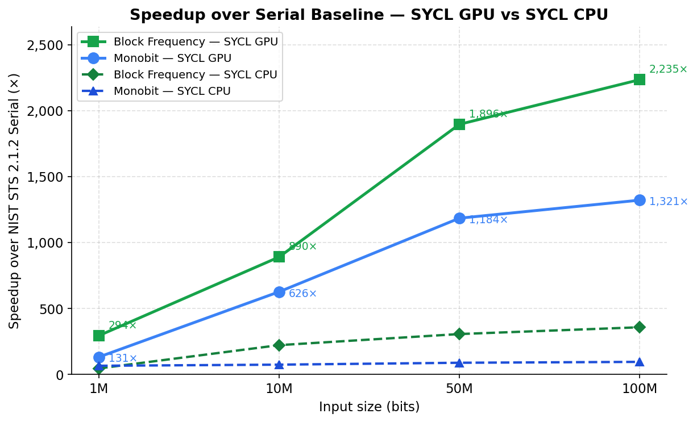
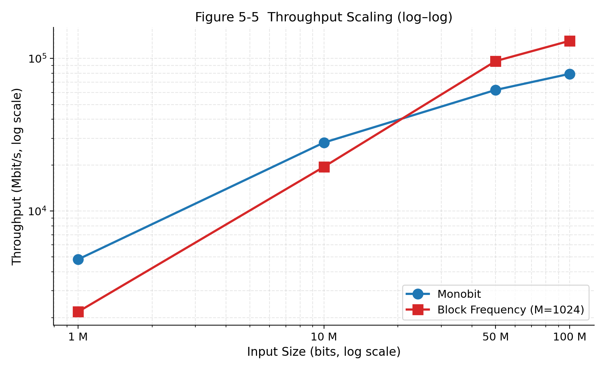

Accelerating NIST SP 800-22 statistical tests using Intel oneAPI and SYCL, achieving up to 2,234× speedup and 160.7 Gbit/s on a single GPU — with bit-exact P-value match and one portable codebase for Intel, NVIDIA, and AMD hardware.
The NIST STS serial C implementation becomes a bottleneck for modern cryptographic pipelines that ingest gigabits of entropy per second. This work reimplements the two fundamental frequency tests using SYCL parallel kernels — one codebase that runs on CPU, Intel, NVIDIA, and AMD GPUs — eliminating the vendor lock-in of prior CUDA-only acceleration work.
Two-phase parallel reduction with work-group shared memory and sycl::atomic_ref. Tests global balance of 0s and 1s in the sequence.
Two-pass data-parallel kernel: a counting pass followed by sycl::reduction for chi-squared accumulation. Tests local balance within M-bit blocks.
Compiles for Intel CPU, Intel GPU, NVIDIA GPU, and AMD GPU from a single SYCL source — no platform-specific code paths.
P-values produced by the SYCL implementation are compared against the official NIST STS 2.1.2 serial reference. All P-values match the serial reference to at least six decimal places across every tested configuration.
| Test | Input Sequence | Expected P-value | SYCL P-value | Status |
|---|---|---|---|---|
| Monobit | 1011010101 (n=10) |
0.527089 | 0.527089 | ✓ PASS |
| Block Frequency | 0110011010 (n=10, M=3) |
0.801252 | 0.801252 | ✓ PASS |
| Block Frequency (M=1024) | Random binary, n=100 M bits | 0.661400 | 0.661400 | ✓ PASS (|ΔP| < 10⁻⁹) |
| Monobit (large-scale) | Random binary, n=100 M bits | — | |ΔP| < 10⁻⁹ | ✓ PASS |
Benchmarked on NVIDIA RTX 4080 SUPER (Intel DPC++ 2024.0, Ubuntu).
Baseline: NIST STS 2.1.2 compiled with gcc -O2;
SYCL GPU target: nvptx64-nvidia-cuda, compiled with icpx -O3 -fsycl.
Each datapoint is the median of 5 runs with standard deviation below 2%.




| Test | Bits (n) | NIST STS Serial | SYCL CPU | SYCL GPU | ||||
|---|---|---|---|---|---|---|---|---|
| Time | Speedup | Throughput | Time | Speedup | Throughput | |||
| Frequency (Monobit) | 100 M | 1,390.10 ms | 14.705 ms | 94.5× | 6.80 Gbit/s | 1.052 ms | 1,321.0× | 95.0 Gbit/s |
| Block Frequency (M=1024) | 100 M | 1,390.10 ms | 3.894 ms | 357.0× | 25.68 Gbit/s | 0.622 ms | 2,234.5× | 160.7 Gbit/s |
SYCL CPU benchmarked on Intel Core i9-13900KF (24 cores), Intel OpenCL 3.0 runtime. P-values match NIST STS reference exactly across CPU, GPU, and serial.
sycl::atomic_ref.S_obs = |Sₙ|/√n, P-value = erfc(S_obs/√2).sycl::reduction accumulates the sum in double precision.igamc(N/2, χ²/2).Power-of-two required for binary tree reduction; avoids warp divergence on most GPU architectures.
sycl::malloc_device with a single memcpy before both kernels — no redundant host↔device transfers.
Block frequency accumulates (πᵢ−0.5)² in double to prevent loss of significance at N=10⁶ blocks.